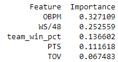
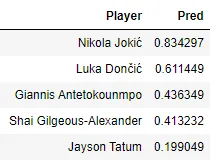

Introduction
As the 2023–24 NBA regular season came to a close, Nikola Jokić was poised to hoist his third MVP trophy. The Serbian superstar is widely regarded as the best basketball player in the world and led his Denver Nuggets to a top seed in the competitive Western Conference — coming off an NBA Championship the season prior, the first in franchise history.
MVP awards are indicative of individual greatness and are usually the second most cited accolade when discussing all-time great players, behind only championship rings. Jokić is my favorite NBA player. His finesse, strength, and passing mastery are beautiful to watch. But how do these basketball skills translate to cold hard numbers? Would a statistical model be able to pick up on the attributes most influential to MVP voting?
Many argue that the MVP is a primarily narrative-driven award — that players with the best story behind them end up being selected by the media members who vote. I wondered how accurately it could be predicted purely using player and team statistics. While picking the frontrunners can be relatively easy (just find the best player on the best team), correctly identifying the outright winner in close races is far harder. Last season three players — Jokić, Joel Embiid, and Giannis Antetokounmpo — each received first-place votes after statistically gaudy seasons. That's exactly the kind of differentiation I set out to test.
Data
The first step toward any machine learning model is collecting the right data. I needed both MVP voting results and season-level player and team statistics for every NBA season since 1980–81, when the league first used media voting to determine the award.
To collect it all, I used Python's Beautiful Soup package to scrape various basketball-reference.com pages — automating what would otherwise be a laborious, season-by-season manual effort. Once gathered, the data required cleaning and feature engineering: selecting and constructing the stats most likely to influence MVP voting.
Using my knowledge of basketball, I narrowed down potential features to those revolving around player impact and team success. Some were already available — points per game, win shares — while others I had to create from scratch. A good example: the widely discussed theory of "voter fatigue," the idea that media voters grow tired of awarding the same player year after year. To capture this, I added a variable counting each player's prior MVP wins. This phenomenon may well explain why Jokić was denied a third consecutive MVP last season when voters chose first-time winner Joel Embiid instead.
What's in the Model?
Through iterative feature selection I wound up with ten variables to predict MVP vote share — primarily advanced metrics like Win Shares and Box Plus-Minus, which can be calculated from box score data all the way back to 1980–81.
One challenge with this project is that the data is inherently imbalanced: far more players receive zero MVP votes than receive any at all. To address this, I chose a gradient boosting model, which handles imbalanced data more effectively by constructing a series of decision trees, each correcting the errors of the previous one. I also framed it as a regression problem — predicting continuous vote share — rather than a binary classification.
After splitting the data into training and testing sets and iterating on feature combinations to minimize mean squared error, I evaluated variable importance. Here are the top five predictors:

Offensive Box Plus-Minus (OBPM) measures a player's offensive contribution in points per 100 possessions, extending beyond traditional stats by accounting for efficiency and overall impact on the court. It's particularly relevant because MVP voters tend to weight offensive performance heavily. Win Shares per 48 minutes (WS/48) estimates how many wins a player contributes to their team — it rewards not just accumulating stats, but doing so in ways that translate to victories. The remaining top features are more intuitive: team win percentage, points per game, and turnovers per game.
Past Season Predictions
Using predicted vote share from the model, it correctly identified the MVP winner in 37 of 43 past seasons — an 86% accuracy rate. I was genuinely surprised. I expected the model to struggle in close races.
Of the six incorrect predictions, four involved seasons that are now widely considered among the most controversial MVP decisions in league history.
In four of the six misses, the model's predicted winner finished second. The 1989, 1994, 1997, and 2008 races were each among the closest ever. In 1989 it predicted Michael Jordan but the media chose Magic Johnson — the two were separated by less than half a percent of predicted vote share. In 1997 the model sided with Jordan over Karl Malone; in 2008, with Chris Paul over Kobe.
The two truly anomalous misses: Steve Nash's back-to-back wins in 2005 and 2006. The model placed Nash outside the top six in voting both years — predicting Shaquille O'Neal for 2005 and LeBron for 2006, who finished second to Nash in each. Nash carried a negative defensive box plus-minus, didn't lead his own team in win shares in 2005, and didn't average 20 points per game in either season. Bill Simmons categorized both wins as "Outright Travesties" in The Book of Basketball. The model, at least, agrees.
2023–24 MVP Predictions

For 2024, I applied the league's new eligibility threshold (65 games minimum), which excluded Joel Embiid's injury-shortened season from contention.
5. Jayson Tatum — best player on the league's best team, but elite teammates dilute his advanced numbers. 4. Shai Gilgeous-Alexander — 30+ points per game, top-3 record in the West, second in WS/48 only to Jokić. 3. Giannis Antetokounmpo — quietly averaging 30/11/6 on Milwaukee's second-best squad. 2. Luka Dončić — the league's leading scorer, over 50 wins with Dallas. 1. Nikola Jokić — statistically untouchable. Historic advanced numbers season after season; the Nuggets held the best record in the West; he was miles ahead of the field in both WS/48 and OBPM. This MVP was wrapped up by February.
Conclusion
This project investigated the predictability of the NBA MVP award and what factors most strongly drive it. By scraping basketball-reference.com, building a gradient boosting model, and applying it to 40+ seasons of data, I found that advanced metrics — particularly OBPM and WS/48 — are the most powerful predictors, enabling the model to correctly identify the winner 86% of the time.
The primary limitation is an inability to quantify media narrative. A natural next step would be scraping news coverage and conducting sentiment analysis throughout the season — tracking which players were discussed most favorably as the race developed. That layer could push accuracy higher in the close, controversial seasons the current model struggles with. But for now, the numbers tell a compelling story on their own.